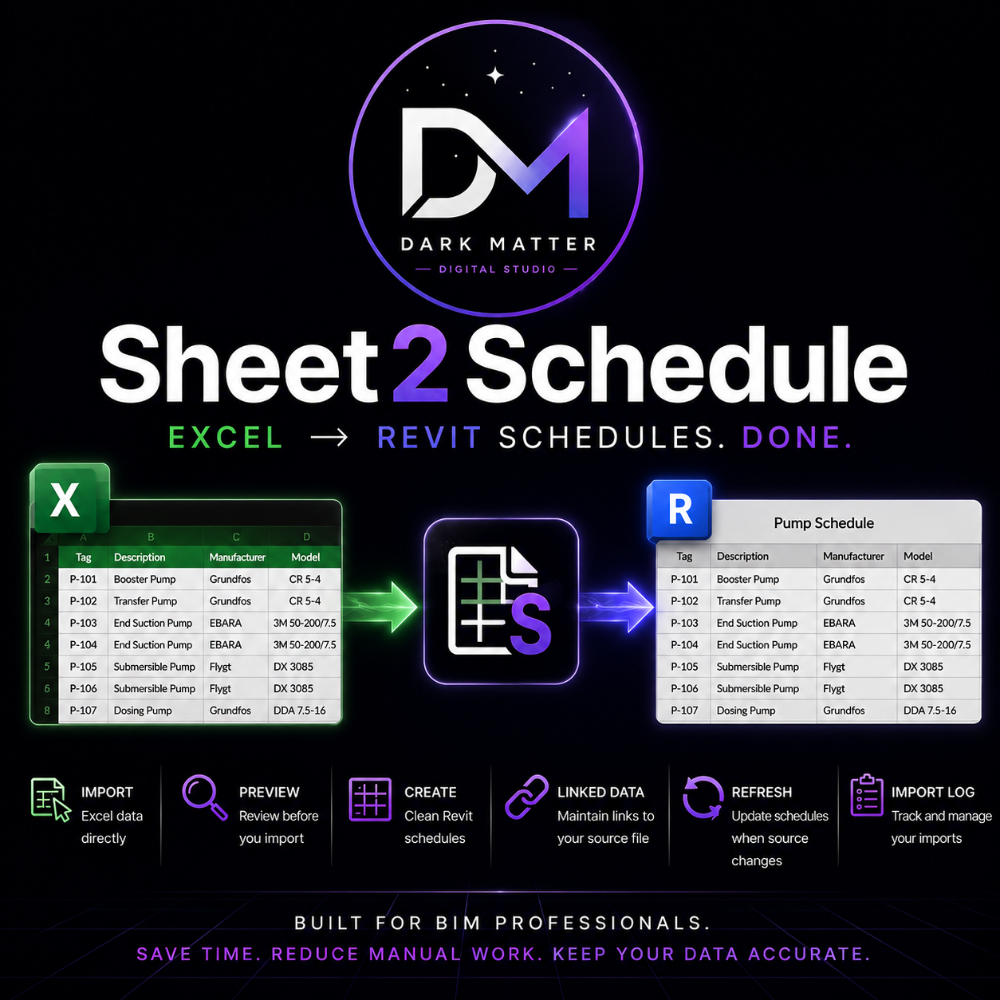

Commercial Web
Sole-developer website delivery, responsive implementation, SEO optimisation, WordPress security reviews and ongoing technical improvement.
BIM One · Provider Compliance · Medilaw
COMMERCIAL WEB · FULL-STACK · SEO · SECURITY
Web developer with commercial experience taking websites from requirements through development, technical SEO, security review, optimisation and delivery. I also build full-stack applications and automation tools when the problem needs more than a website.
My professional experience starts with websites: commercial builds, SEO, security and client delivery. Behind that is full-stack application work and a background in engineering automation, which means I can keep going when a project needs APIs, data, integrations or domain-specific tooling.
Sole-developer website delivery, responsive implementation, SEO optimisation, WordPress security reviews and ongoing technical improvement.
Frontend systems, backend applications, relational data, API integrations, testing and product-oriented UI work.
Commercial C#/.NET tooling and engineering automation that solves specialised workflows beyond the browser.
Real clients. Real requirements. Real responsibility.
I’ve delivered commercial web work across engineering, professional services and healthcare. That has included sole-developer builds, technical SEO using SEMrush and seoClarity, WordPress security reviews, vulnerability remediation and choosing the right stack for the client rather than forcing every project into the same framework.
Utilities · BIM Management · Contract Administration
Built and delivered BIM One’s commercial website as the sole developer. I owned the implementation end to end, translating the requirements of an engineering consultancy into a responsive public-facing experience and adapting the technology approach around the client’s needs.
Built and delivered the Provider Compliance website as the sole developer, shaping a service-led experience around discoverability, clear conversion paths and maintainable content. I selected the stack and implementation approach around the client’s requirements.
Compliance · Audits · Growth
Services · Consultants · Assessments · Locations · Bookings
Conducted an SEO optimisation review of Medilaw’s large, content-heavy website using SEMrush and seoClarity, assessing technical and structural opportunities across discoverability, metadata, site architecture and search performance.
Custom stacks · JavaScript · HTML/CSS · Webflow · WordPress
SEMrush · seoClarity · Technical SEO · Site structure
WordPress reviews · Vulnerability discovery · Plugin assessment · Remediation
Responsive design · QA · Deployment · Maintenance
Webflow, WordPress or a custom stack depending on the client, constraints and maintainability requirements.
Technical SEO and WordPress security reviews using professional tooling to uncover structural and vulnerability issues.
Optimisation, vulnerable plugin remediation, content structure and practical technical improvements.
A polished component system built to ship product interfaces faster.
A commercial-ready Next.js UI pack with 34+ responsive sections across hero, feature, CTA, FAQ, testimonial, dashboard, documentation, integration and footer patterns.
Laravel application exploring Azure, Shopify and WooCommerce-style integrations with products, orders, customers, webhook events, sync logs and provider abstractions.
Ruby on Rails application built around campaigns, contacts and deliveries, with relational modelling, validation, persistence and queued workflows.
Browser and API automation using maintainable test architecture, multiple browser engines, mobile coverage and CI-oriented workflows.
I’m comfortable moving between interface work, backend application structure, data models, integrations, testing and deployment rather than treating the browser as the whole product.
Excel to native Revit schedules, without rebuilding them by hand.
A Revit add-in that imports structured spreadsheet data, previews it, creates native schedules, maintains source links and supports refreshing schedules when the workbook changes.

Connecting AI tools to real engineering workflows through APIs, constrained actions and MCP-style tool interfaces instead of stopping at chat.
My BIM background lets me understand the model and the workflow before I automate it, then move between API, data and user experience.
I like problems where software removes repeated work, connects systems or makes a specialist process easier to execute reliably.
Ask for information, inspect model context, run a constrained tool and return structured results.
These aren’t here to define the job I’m applying for. They’re here because I genuinely enjoy understanding systems below the surface.
A low-level scripting language that compiles to C.
Built from the ground up in Rust to explore compiler architecture, language design and systems programming, with readable Lua-like syntax and native output.
$ volta signal.vlt
fn main()
let samples = [12, 18, 31, 46]
let peak = max(samples)
print("peak: {peak}"
)
end
→ generating C99...
→ clang signal.c -o signal
✓ peak: 46Modular OSINT investigation framework for lawful public intelligence collection, correlation and reporting.
Ruby VM work, reverse engineering and CTF investigations, language experiments and AI/tooling prototypes.
Modern frontend development, browser applications, React and Next.js product work.
Responsive commercial websites, polished interfaces and client-led delivery.
Application architecture, integrations, persistence, webhooks and API workflows.
Relational application development, validations and background workflows.
Commercial automation, Revit add-ins and desktop/application development.
CLI tooling, automation, compiler implementation and lower-level experimentation.
My clearest professional lane is web development. I’ve been responsible for real client websites, including sole-developer delivery, SEO optimisation and technical/security review.
I also enjoy application development and automation, so I’m comfortable moving beyond the page into backend logic, databases, APIs, testing or specialist software when the job requires it.
I’m looking for a web development team where I can ship useful work, keep growing across the stack and bring a wider software-engineering mindset to the product.
I’m looking for a web development role where I can contribute commercial experience from day one and keep growing across modern frontend, backend and product development.